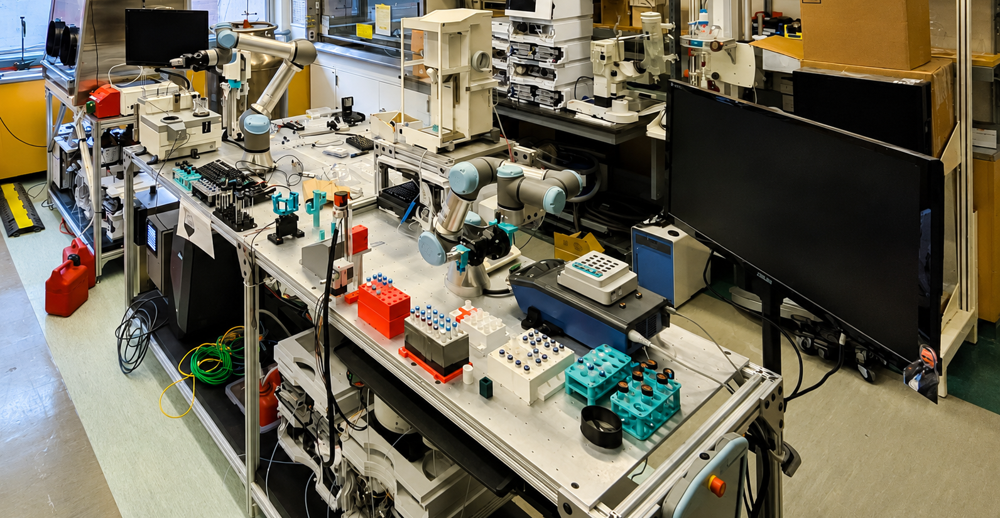
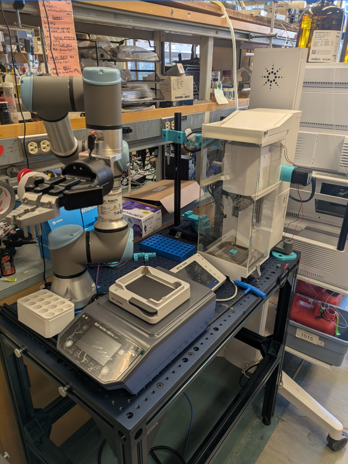
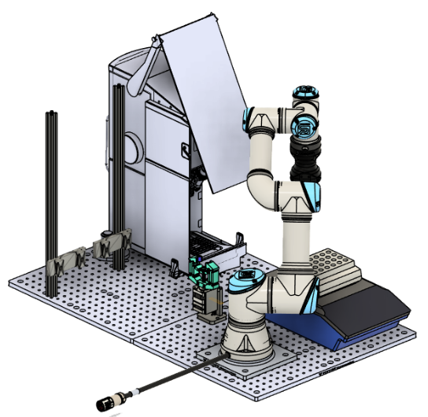
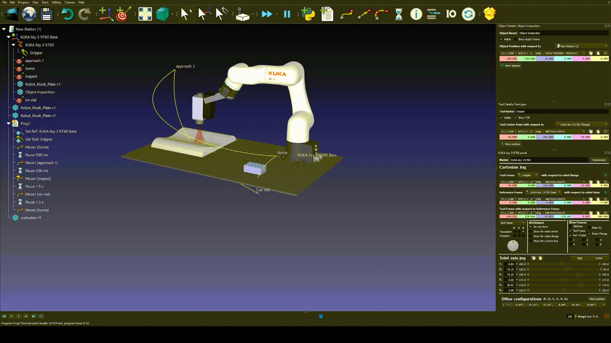
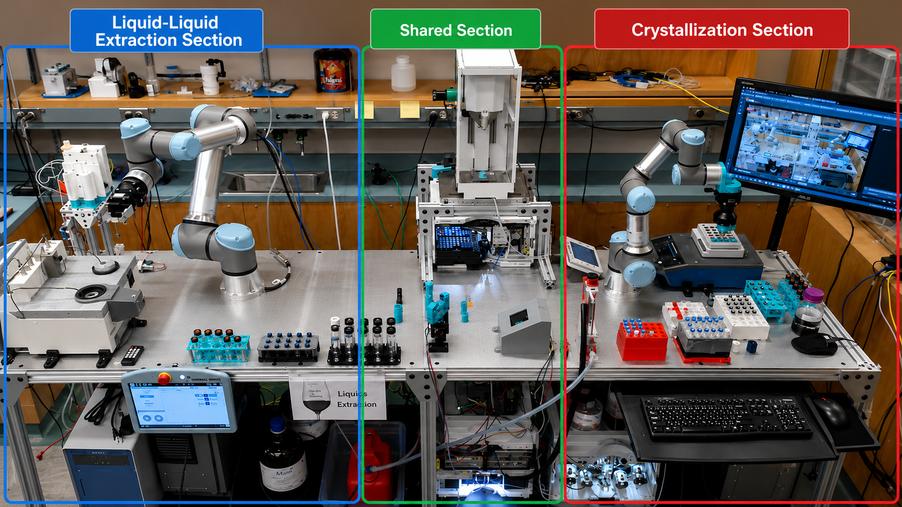
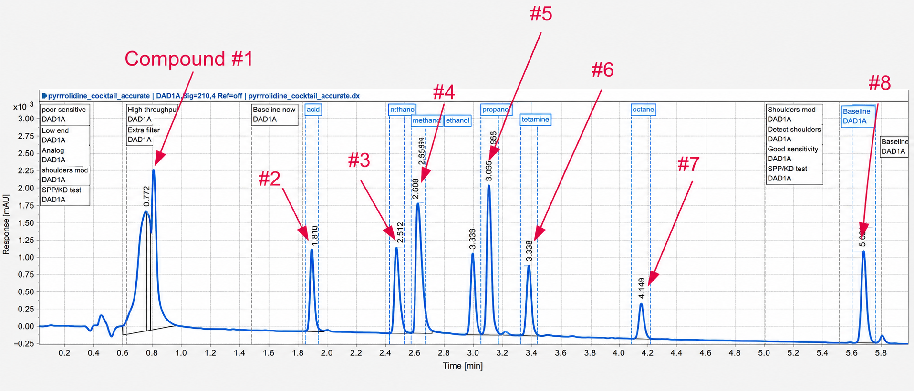
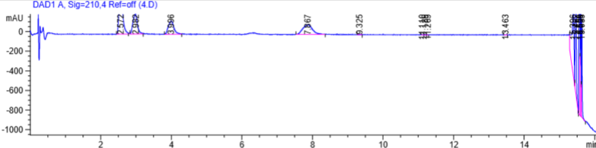
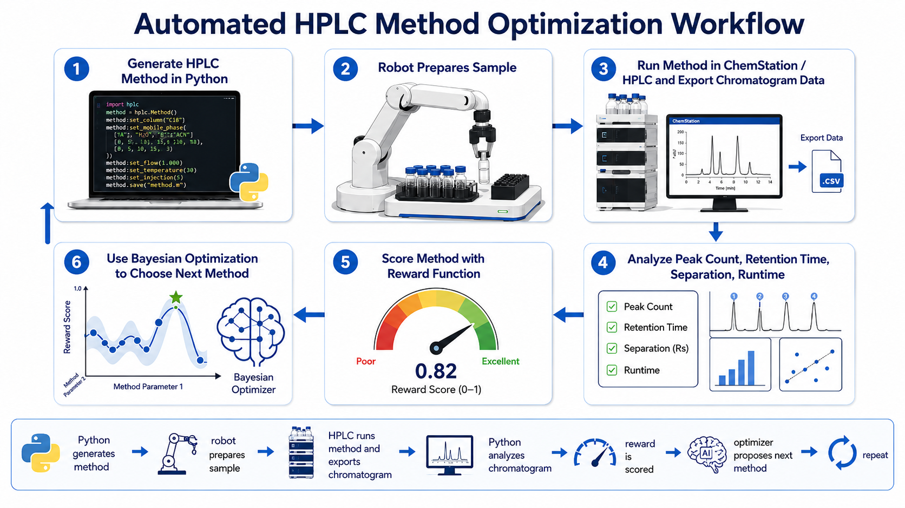
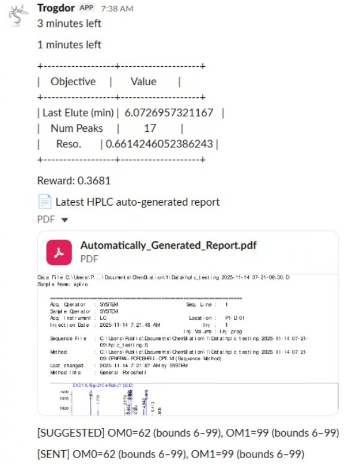

Automation for Experimental Chemistry

Disclaimer: All images and videos in this section are used with permission from my employer
About
At Hein Lab, my internship focused on building automation systems that connected industrial robot arms, lab instruments, and Python software into working self-driving chemistry platforms.
I worked on robotic platform commissioning, where I helped set up and program robot workcells for solid dosing, high-performance liquid chromatography (HPLC) method development, and crystallization workflows. This involved platform assembly, robot mounting, module placement, I/O wiring, networking, workspace calibration, motion programming, collision checking, and end-to-end workflow testing. I also developed Python software to save large amounts of time for scientists operating high-performance liquid chromatography (HPLC) equipment.
Solid Dosing Robotic Platform
Overview
The solid dosing platform was a robotic workcell designed to automate solid sample preparation. In a manual workflow, a researcher would select a vial, remove the cap, place it on a precision powder-dispensing instrument, choose the correct dosing head, dispense the target mass of solid material, and return the vial for the next step.
This system was built to automate that sequence using a UR robotic arm. The robot moved vials between a tray, an automated decapper, a Quantos powder dispenser, and an 8-position dosing-head rack. The goal was for the platform to support up to 8 interchangeable dosing heads, allowing different solid materials or dispensing setups to be stored in the system and selected automatically during a run.

System Workflow
The robot first picks a vial from the tray and places it into the decapper, where the cap is removed automatically. The open vial is then transferred to the Quantos station, which dispenses a precise target mass of solid powder.
Before dispensing, the robot selects the required dosing head from the 8-position storage rack. It removes the current head from the Quantos, retrieves the requested head from the rack, installs it onto the Quantos, and allows the instrument to dispense the correct mass into the vial. After dosing, the robot returns the vial to its original tray location or transfers it to the next station.
My Role
- Commissioned a UR robotic arm for the solid dosing workcell, including physical setup, I/O configuration, network communication, TCP calibration, and workspace alignment with the vial tray, decapper, Quantos station, and dosing-head rack
- Programmed and refined robot waypoints for accurate pickup, placement, tool exchange, and collision-free motion, achieving error-free operation over 99% of the time.
- Created CAD layouts of the platform to support RoboDK simulation, reachability checks, collision review, and module placement before physical testing.
- Debugged gripper alignment, module positioning, reachability, timing, and handoff reliability.


Liquid-Liquid Extraction & Crystallization Robotic Platform

Overview
This platform combined two chemistry workflows into one shared robotic workcell. The left side was used for liquid-liquid extraction, where samples are transferred between liquid phases for separation. The right side was used for crystallization, where prepared solutions are handled to grow and process solid crystals.
The chemistry behind the workflows is fairly involved, but my role was focused on the mechatronics side: commissioning robots, programming robot motion, integrating lab modules, troubleshooting hardware communication, and manufacturing the trays and interfaces that allowed the robots to interact with the platform reliably.
My Role
- Helped set up 3 robots on the platform, including PLC programming, Python control, I/O setup, networking, and robot-to-module communication.
- Worked on the original KUKA + UR robot configuration before the platform was later standardized to use two UR robots.
- Troubleshot robot communication, module-triggering, collision, and handoff issues during development, contributing to approximately 98% reliable operation across 1000+ workflow runs.
- Helped transition the platform from one KUKA robot and one UR robot to two UR robots to standardize robotic equipment across the lab.
- Programmed and refined UR robot waypoints for sample transfer, tray access, module handoffs, and collision-free motion across both the liquid-liquid extraction and crystallization sides of the platform.
- Designed and manufactured 3 custom 3D-printed trays, along with robot-accessible interfaces and a centrifuge-related fixture for reliable sample handling.
HPLC Method Optimization
Overview
Another project that I was involved in at Hein Lab was developing an algorithm to optimize analytical methods for high-performance liquid chromatography (HPLC). Please forgive me as I will have to go into some background on chemistry here for context :)
HPLC is an analytical instrument used to separate and measure compounds in a mixture. A sample is pushed through a column, and different compounds exit at different times. The output is a chromatogram, where each peak represents a detected compound.
The retention time of a peak helps identify what the compound is, while the peak area indicates how much of that compound is present.
A good HPLC method produces clean, separated peaks so each compound can be identified and measured reliably. As seen in the image below, the 8 peaks (various compounds) can be seen easily, which is ideal.

An HPLC method is the set of instructions that controls how the instrument runs the separation. It defines parameters such as solvent composition, gradient changes, hold times, flow rate, and total runtime. Changing the method changes when compounds leave the column and how well their peaks separate.
For complex mixtures, peaks can overlap, making it very difficult for the instrument to resolve and quantify items, as seen in the chromatogram below.
This makes method optimization particularly slow because overlapping peaks often require extensive trial-and-error.
A researcher may need to manually adjust the method, run the sample, inspect the chromatogram, and repeat the process many times. This consumes time and solvent, and can still result in poor separation, a huge pain for scientists in my lab. Therefore, I aimed to tackle this using my automation skills.

Automated Optimization Workflow
To reduce this manual trial-and-error, I worked on a Python-based Bayesian optimization workflow for HPLC method development. The robotic platform prepared and queued samples, the HPLC ran each generated method, and Python analyzed the resulting chromatogram. The optimizer then used previous results to propose the next method, gradually improving separation quality over repeated runs.
The goal was to autonomously find HPLC conditions that produced clearer peak separation, detected the correct number of compounds, and avoided unnecessary runtime. The workflow used an in-house Python library to control ChemStation through macros, Sobol pseudo-random trials for initial exploration, PyTorch Bayesian optimization for method improvement, and automated reporting to track results across experiments.

My Contribution

My work focused on turning the HPLC optimization code from a fragile prototype into a workflow that could run continuously. When I started, the system could generate new method parameters, but it often broke when trying to reuse previous runs or when the method became more complex.
In this context, method complexity refers to how detailed the HPLC “recipe” is. A simple method may only change the solvent conditions a few times during the run. A more complex method adds extra gradient or hold steps, giving the instrument more control over difficult regions where peaks overlap.
I helped stabilize the workflow by fixing several key issues:
- Improved complexity handling so the code could add new method steps without crashing.
- Fixed errors caused by missing timing values, broken step IDs, and invalid method structures.
- Added checks to keep generated solvent gradients physically valid.
- Ensured previous experimental results could still be reused after the method became more complex.
- Redesigned the reward function so the optimizer favored correct peak count, clearer separation, and shorter runtime instead of false peaks.
A major lesson from this project was that optimization is only useful if the scoring system matches the real experimental goal. The original reward function could accidentally reward bad chromatograms with extra false peaks. I corrected the scoring logic so the optimizer was pushed toward cleaner, more reliable separations.
I also added practical tools to make the system easier to run during long experiments:
- Automatic peak-count estimation.
- Threshold-based stopping once the method was good enough.
- Slack run updates for remote monitoring.
- Auto-generated PDF chromatogram reports.
Results
After these fixes, the workflow could run full optimization campaigns end-to-end. The system repeatedly generated HPLC methods, ran experiments, analyzed chromatograms, updated the optimizer, and selected the next method without needing constant manual adjustment.
The final workflow demonstrated a complete closed-loop system: robot prepares sample → HPLC runs method → Python analyzes chromatogram → optimizer proposes next method → repeat.
The system was validated through over 25 runs consisting of 50-run optimization experiments. It reliably identified methods with the target peak count and great seperation, showing that the workflow could automatically find improved separation conditions with less manual trial-and-error. In this optimization setup, a lower reward score means better peak separation and a more successful method.
One example 50-run campaign is summarized in this HPLC method optimization slide deck.